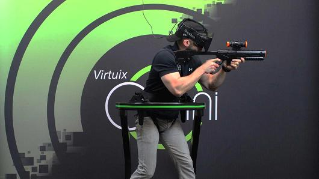
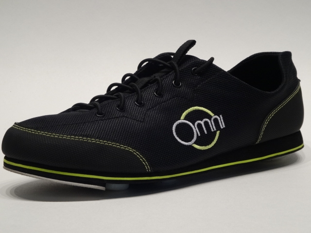

The Future of Virtual Reality:
Omni Technology
Virtuix Omni
Imaging going on virtual nature walk, or running for cover on a virtual battlefield. These amazing experiences can only come from virtual reality technology like the Virtuix Omni paired with technology like the Oculus Rift (Virtual Reality Headset). The Virtuix Omni is the much smaller gaming/simulation parallel to a real life treadmill. Sort of. Essentially it’s function is the same; allow the user to walk or run on it without actually travelling any distance. The difference between the two lies in how they work. A treadmill has a thick belt that rotates at a set speed, forcing the user to walk or run so they aren’t propelled off of the conveyer. The Virtuix Omni, on the other hand, requires the user to move themselves. It is a slightly concave platform, that allows for smooth movement against it, so with every step, the users feet are brought back to the center of the platform due to the material used for it having very slight friction. There is a harness that prevents the user from running off of the platform and slightly assist the user in keeping their balance, but does not limit them from moving in 360 degrees while they are walking, running, and turning.
How Does the Virtuix Omni Work?
How does this amazing revolutionary technology work? Well, the magic is in the shoes. With the Virtuix Omni you need to strap on a pair of special low friction shoes that have a small sensor on them. This sensor tracks the movement of your feet as you walk or run or turn, allowing your in-game avatar to mimic your movements. With your avatar calibrated to move at the same pace as you are, it truly feels as if you are the one moving in-game. This technology opens a lot of door that were previously closed in the world of virtual reality and only continues to advance itself as we move forward technologically.
All The Bits and Pieces
If you’re interested in purchasing the Virtuix Omni, you need to know what you’re really buying. The Virtuix Omni itself is is composed of many parts and gadgets. Most of these pieces are essential to the functioning of the technology. The different parts to purchase are…
Although this technology is amazing, affording the many expensive bits and pieces can be a struggle. There are many components to the Virtuix Omni, and this is quite literally one of the prices to pay for the amazing experience of running in a virtual world.